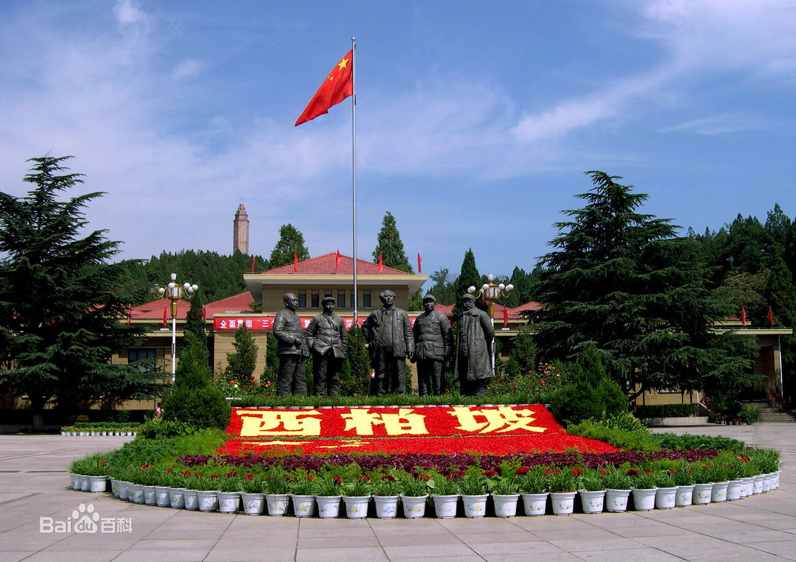
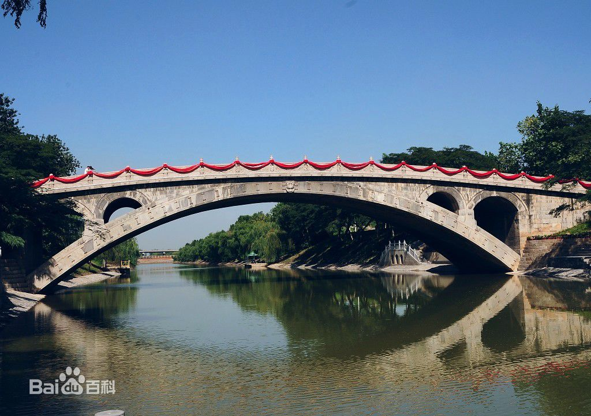
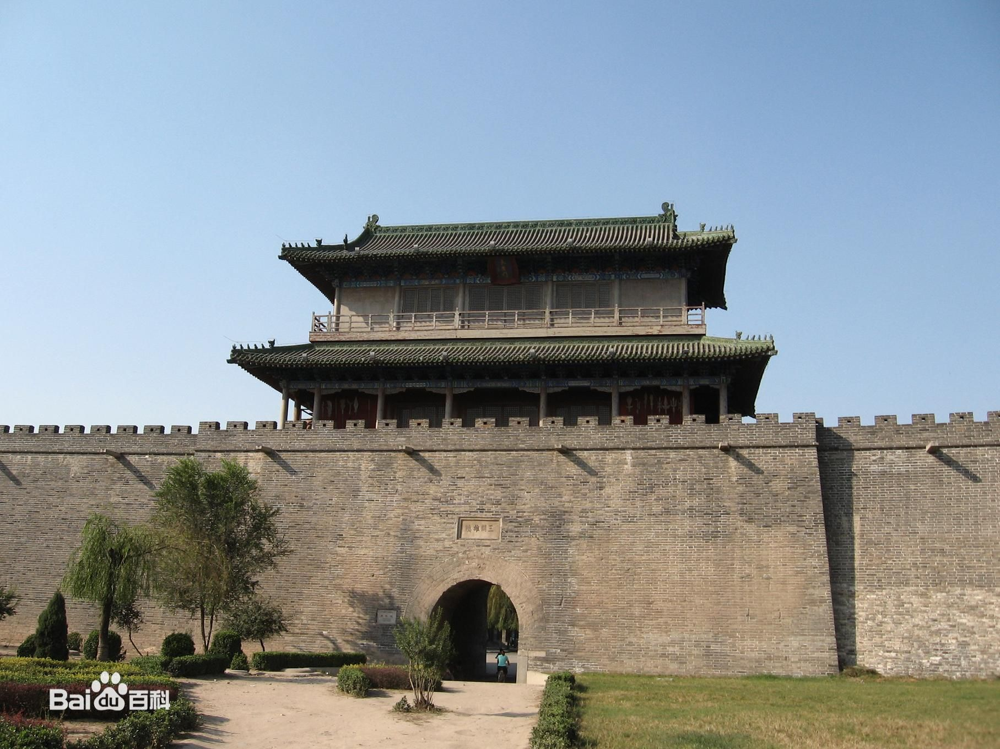
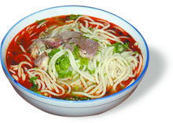
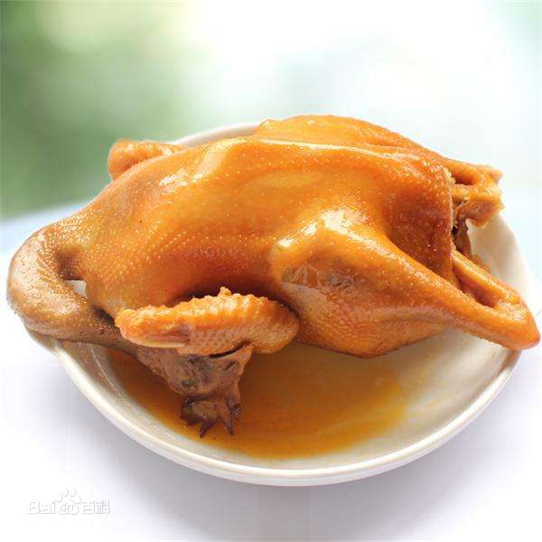
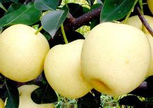

Welcome To My Hmonetown!
城市掠影

家乡简介
石家庄，简称“石”，旧称石门，是河北省省会、河北省的政治、经济、科技、金融、文化和信息中心，国务院批复确定的京津冀地区重要的中心城市之一 。截至2018年，全市下辖8个区、11个县、代管3个县级市，总面积14464平方千米，建成区面积283.72平方千米，常住人口1095.16万人，城镇人口691.7万人，城镇化率63.16%。
石家庄地处中国华北地区、河北省中南部、环渤海湾经济区，是中部战区陆军机关驻地 ，是国务院批准实行沿海开放政策和金融对外开放城市 ，也是全国重要的商品集散地和北方重要的大商阜，全国性商贸会展中心城市之一 ，是中国国际数字经济博览会永久举办地 ，京广、石太、石德、朔黄四条铁路干线交汇于此，是中国铁路运输的主要枢纽之一。
石家庄在夏禹时期为冀州地，秦朝时属巨鹿郡；五代时属河北成德军节度使；宋朝时属河北西路；明朝时属正定府、保定府；民国十四年（1925年）建立“石家市”，实行市自治制；同年8月将石（家）庄、休门合并，更名为石门市；民国三十六年（1947年）11月12日石门市解放，12月26日更名为石家庄市；1968年1月29日，河北省会迁至石家庄市。
石家庄是国家优秀旅游城市，旅游资源丰富，名胜古迹众多，拥有全国重点文物保护单位39处，国家级历史文化名城1座，国家级森林公园3处（仙台山、五岳寨、驼梁山），西柏坡是国家5A级景区，被称为“晋察冀边区的乌克兰”，是解放战争时期中国革命的领导中心。
风景名胜
西柏坡
西柏坡位于平山县境内，距石家庄市区80千米，中国著名的爱国主义教育基地，国家AAAAA级重点风景名胜区。1947年以刘少奇、朱德为首的中央工作委员会先期进驻西柏坡召开了中国土地会议，颁布实施《中国土地法大纲》。1948年毛泽东、周恩来、任弼时率领中共中央和解放军总部移驻西柏坡，在此组织指挥了辽沈、淮海、平津三大战役，取得了战略决战的决定性胜利

赵州桥
赵州桥位于河北省石家庄市赵县城南二千米，建于隋开皇至大业初年（公元595—605年），由杰出匠师李春设计建造，是世界现存最年代最久、保存最好、科学水平极高、艺术形象极美的古石拱桥，在世界建筑史上占有极其重要的地位，自古即为“天下雄胜”，“现代钢筋混凝土拱桥的祖先”。

正定古城墙
正定古城墙位于正定县，始建于北周，初为石筑。唐宝应元年因滹沱河溢水灌城，城日以圮，进行拓建。明正统十四年扩建为周长二十四里，高三丈二只，上宽二丈的土城。隆庆五年真定知县顾授始将土城改为砖城，于万历四年竣工。四城门东曰迎旭，南曰长乐，西曰镇远，北曰永安，并均附有月城和瓮城。后世重修或改建也均是在此基础上进行。在预防水患和军事防卫上起了重要作用。

Know more
地方特产
无极饸烙
无极饸饹是一种地方特色小吃，俗称饸饹面。圆条形的细长面条，香喷喷，热乎乎，很合人们的口味。“荞麦饸饹黑是黑，筋韧爽口能待客”，这是人们对荞麦饸饹的赞美

金凤扒鸡
金凤扒鸡最早始于1908年，采用独特的制作工艺，用蜂蜜对鸡进行上色炸制，并用中药秘方老汤煮制。具有一定的药理功效和保健作用，上世纪80年代初，马家鸡的经营者们设计了“金凤”作为商标，并在1984年正式注册了金凤扒鸡的商标。

赵州雪花梨
赵州雪花梨与其它品种的梨相比较，具有以下特点，一是成熟期早。一般比天津鸭梨早下树一个月左右。二是个头大，产量高。大者约500克有余，成树每株年产500公斤以上。三是含糖量高，比其它品种的梨高3－5度，故为制作水果罐头及其它工业食品的上乘原料。以其为原料酿制的雪花梨酒清澈甘冽，馨逸芳香，沁人心脾，为人们理想的清凉饮料，以其制成的梨干、梨脯、蜜饯等工业食品，原果风味浓厚，食用方便，耐储存，深受国内外消费者的欢迎。

历史文化
方言
石家庄方言是指石家庄市区及周围17个县（市）的方言。按照李荣在《汉语方言分区》中的划分，石家庄方言中有13个市、县属于冀鲁官话石济片赵深小片，分别是：赵县、深泽、正定、行唐、井陉、新乐、石家庄市区、辛集、无极、晋州、高邑、藁城、栾城。 [32]
戏曲
戏曲
石家庄戏曲艺术有着悠久的传统和鲜明的地方特色，是“奚派”京剧艺术的摇篮，中国“四大须生”之一、著名京剧表演艺术家奚啸伯先生曾长期在市京剧团担任主演。
地理环境
位置境域
石家庄地处河北省中南部，东与衡水市接壤，南与邢台市毗连，西与山西省为邻，北与保定市交界，位于首都北京西南方向，距离北京市主城区283千米。南北最长处148.02千米，东西最宽处175.38千米。位于北纬37°27′～38°47′(误差±1′)，东经113°30′～115°20′(误差±1′)之间，截至到2017年，石家庄市实际总面积13504平方千米（不包括河北省直管辛集市面积960平方千米），其中，8个建置区面积2220平方千米。
气候
家庄地处中低纬度亚欧大陆东 缘，临近太平洋所属渤海海域，属于温带季风气候。太阳辐射的季节性变化显著，地面的高低气压活动频繁，四季分明，寒暑分明，雨量集中于夏秋季节。干湿期明显，夏冬季长，春秋季短。春季长约55天，夏季长约105天，秋季长约60天，冬季长约145天。空气年平均湿度65%。春季降水量偏少，常有4级偏北风或偏南风，3、4月份气温回升快；夏季，受海洋温湿气流影响，6、7、8、9三个月降水占全年降水量的63%-70%，天气比较潮湿，7月和8月份三伏天期间空气湿度高达100%；秋季，受蒙古高压影响，晴朗少雨，温度适中，气候宜人，空气湿度平均为78%。深秋多东北风，有寒潮天气发生；冬季，受西伯利亚冷高压的影响，盛行西北风，气候较冷，天气晴朗少云，常出现降雪。 [17]
石家庄年总降水量为401.1-752.0毫米。其中西部山区雨量为628.4-752.0毫米；其它地区为401.1-595.9毫米。冬季常降鹅毛大雪，总雪量为19.2-26.8毫米。大雪虽给交通带来一些不便，但对小麦越冬起到保护作用，为春季返青提供了有利的水分条件。春季降水偏少，总雨量为11.0-41.7毫米。夏季雨量大，十分集中，降雨量为500多毫米以上。年总日照时数为1916.4-2571.2小时，其中春夏日照充足，秋冬日照偏少。
Please watch the vedio to know more about my hometown
<